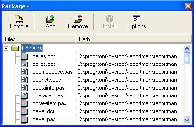

Download the components from sourceforge and unpack it to a directory:
http://sourceforge.net/projects/reportman
| Version | Packages | Description |
| Delphi 5 | rppack_del5.dpk | Unique complete package (VCL only) |
| Delphi 6/7 | rppack_del.dpk | Base package, non-visual |
| rppackvcl_del.dpk | VCL components | |
| rppackdesisgnvcl_del | Interface to Report Manager Designer (VCL) | |
| rppackdesigntime_del.dpk | Designtime package, design editors. | |
| rppackv_del.dpk | Visual CLX package, for cross platform development | |
| rppackdesign_del.dpk | Visual CLX interface to Report Manager Designer | |
| Delphi 2005 | rppack_del2005.bsdproj | Base package, non-visual |
| rppackvcl_del2005.bsdproj | Interface to Report Manager Designer (VCL) | |
| rppackdesignvcl_del2005.bsdproj | Interface to Report Manager Designer (VCL) | |
| rppackdesigntime_del2005.bsdproj | Designtime package, design editors. | |
| Delphi 2007 | rppack_del2007.bsdproj | All in one |
| Delphi 2009 | rppack_del2009.bsdproj | All in one |
You must install the packages in the correct order. CLX packages are optional. You should install rppackdesigntime_del in Delphi 6/7 to install integrated property editors into your IDE, so you can preview report without compiling your application.
You must install Indy components in Delphi 5 before installing Report Manager components or disable Indy support in rpconf.inc file.
For Delphi 7, if you enable Indy (enabled by default) you must upgrade to latest version 9.
After a Delphi update or a component library update to related packages (IBX,Indy for example), can be necessary to rebuild all the packages. Uninstall them and then install them in the same order.
Before begin installation you must remove all packages of any previous version (it's not totally necessary but a few warning or error messages may appear).
In Delphi IDE select Open option of file menu, then select .dpk package files, click the install button. A warning about dependences can apper, click yes to solve dependences and install.
If you alter rpconf.inc, you can remove the dependeces of the disabled options, for example if you disable ADO support you can remove adortl dependence.

To compile your projetcs must add the report manager components directory to the library path.
If you compile with runtime packages you must include the .bpl files generated with your application (just like other Borland packages)
Report Manager is divided in packages because you can use it in different scenarios, for example for a console application you only need rppack_del.dpk, for VCL applications you need also rppackvcl_del.dpk, for CLX applications you need rppackv_del.dpk, if you want to include the designer linked into your application you need rppackdesign_del.dpk (CLX) or rppack_designvcl (VCL).
If you have problems see compiling options.